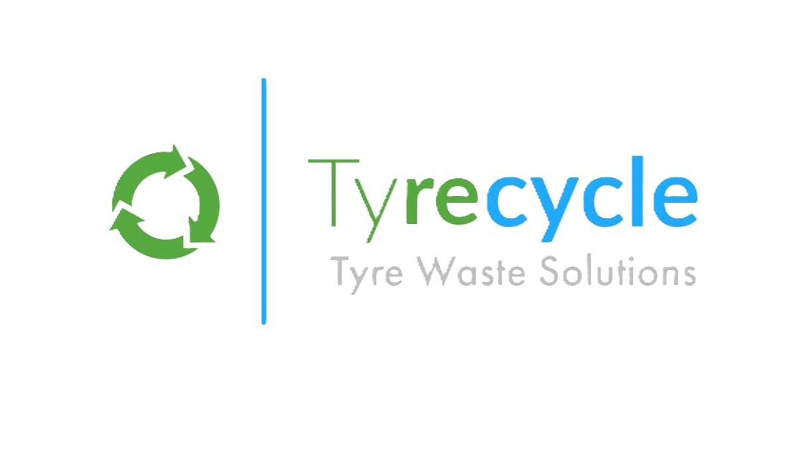
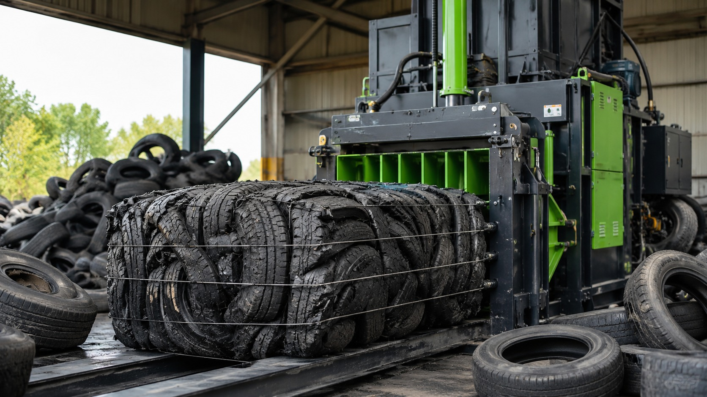

Waste Tyre Collection
Scheduled and one-off tyre collections for garages, tyre shops, repair centres and commercial sites.

Tyre Waste Solutions
Helping garages, tyre shops and businesses handle waste tyres responsibly across London and surrounding areas.
What we do
From regular collections to tyre baling, we keep your yard clear and your waste moving.
Scheduled and one-off tyre collections for garages, tyre shops, repair centres and commercial sites.
Processing tyres into compact bales for easier handling, storage and onward recycling.
Collection support for alloy wheels, steel wheels and mixed tyre waste streams.

Who we are
Tyrecycle is a tyre waste solutions company focused on practical, reliable and environmentally responsible tyre recycling support.
We work with businesses that need clear communication, fast response times and a tidy professional service.
Get a collection quoteWhy choose us
Contact Tyrecycle
Call, email or message us on WhatsApp and we’ll get back to you.